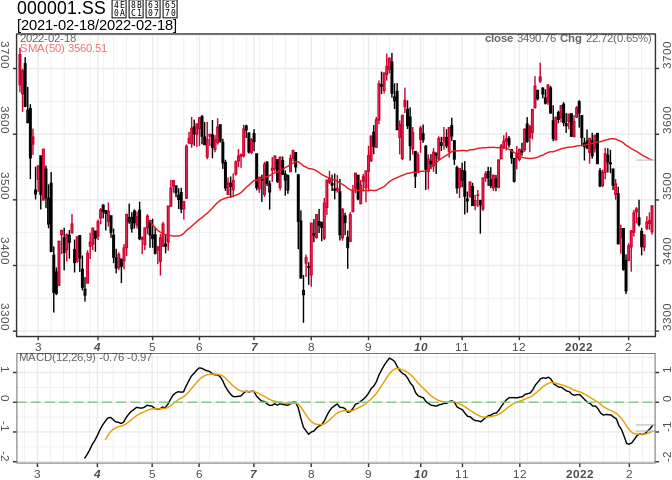

pedquant (Public Economic Data and QUANTitative analysis) provides an interface to access public economic and financial data for economic research and quantitative analysis. The functions are grouped into three main categories,
- ed_* (economic data) functions load economic data from NBS and FRED;
- md_* (market data) functions load stock prices from Yahoo finance, stock prices and financial statements of SSE and SZSE shares from 163 Finance, and future prices from Sina Finance etc.
- pq_* (quantitative analysis) functions create technical indicators, visualization charts and industrial index etc for time series data.
The functions in this package are designed to write minimum codes for some common tasks in quantitative analysis process. Since the parameters to get data can be interactively specify, it’s very easy to start. The loaded data have been carefully cleansed and provided in a unified format. More public data sources are still under cleansing and developing.
pedquant package has advantages on multiple aspects, such as the format of loaded data is a list of data frames, which can be easily manipulated in data.table or tidyverse packages; high performance on speed by use data.table and TTR; and modern graphics by using ggplot2 and interactive graphics by using plotly. Similar works including tidyquant or quantmod.
Installation
- Install the release version of
pedquantfrom CRAN with:
- Install the developing version of
pedquantfrom github with:
Example
The following examples show you how to import data and create charts.
library(pedquant)
## import eocnomic data
dat1 = ed_fred('GDPCA')
#> 1/1 GDPCA
dat2 = ed_nbs(geo_type='nation', freq='quarterly', symbol='A010101')
## import market data
FAAG = md_stock(c('FB', 'AMZN', 'AAPL', 'GOOG'), date_range = 'max') # from yahoo
#> 1/4 FB
#> 2/4 AMZN
#> 3/4 AAPL
#> 4/4 GOOG
INDX = md_stock(c('^000001','^399001'), date_range = 'max', source = '163')
#> 1/2 ^000001
#> 2/2 ^399001
# candlestick chart with technical indicators
pq_plot(INDX$`^000001`, chart_type = 'candle', date_range = '1y', addti = list(
sma = list(n=50), macd=list()
))
#> $`000001.SS`
#> TableGrob (2 x 1) "arrange": 2 grobs
#> z cells name grob
#> p0 1 (1-1,1-1) arrange gtable[layout]
#> p1 2 (2-2,1-1) arrange gtable[layout]
# comparing prices
pq_plot(FAAG, multi_series = list(nrow=2, scales = 'free_y'), date_range = '3y')
#> $multi_series
Issues and Contributions
This package still on the developing stage. If you have any issue when using this package, please update to the latest version from github. If the issue still exists, report it at github page. Contributions in any forms to this project are welcome.